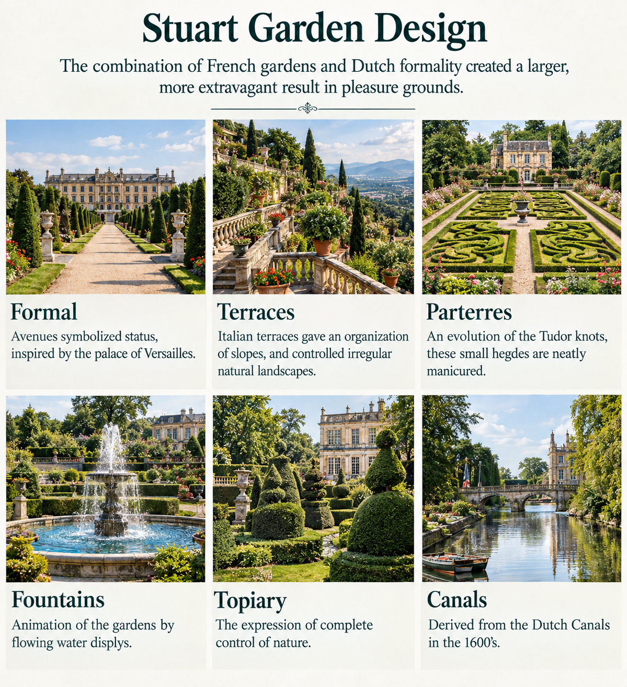
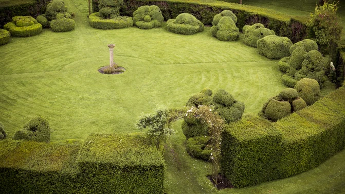

Stuart Garden Design
Stuart Garden Design

The Stuart period (1603–1714) was an important period in the development of formal English garden design. During this time, English gardens were increasingly influenced by the sophisticated landscapes of France, Italy, and the Netherlands. The combination of French formality and Dutch horticultural influence created gardens that were larger, more elaborate, and more theatrical than earlier English gardens. Gardens became important components of the great country estates, designed not only for recreation but also to demonstrate the wealth, power, education, and social status of their owners. The garden was often treated as an extension of the architecture. Long avenues connected the house to the wider landscape, terraces organized changes in elevation, parterres created intricate patterns, and fountains and canals introduced movement and spectacle. These gardens were known as pleasure grounds because they were designed to provide entertainment, visual delight, walking, socializing, and opportunities for displaying the sophistication of the estate. A central principle of Stuart garden design was the idea that nature could be organized, controlled, and transformed into art.Formal
Avenues, Symmetry, and Status Formal design was one of the defining characteristics of the Stuart garden. Inspired particularly by French gardens and the grand landscapes associated with Versailles, designers emphasized symmetry, geometry, perspective, and strong visual axes. Long avenues were frequently aligned with the principal house. From the building, the viewer could look outward along a carefully controlled line toward a distant feature, monument, fountain, or avenue of trees. These enormous vistas were not simply decorative. They were a way of communicating status and authority. A long, straight avenue required considerable land and extensive maintenance. Its scale demonstrated that the owner possessed the wealth and influence necessary to manipulate the landscape on such a grand scale. Typical formal characteristics included: * Straight avenues * Strong central axes * Symmetrical planting * Geometric beds * Clipped hedges * Carefully positioned trees * Long vistas * Ornamental statues * Fountains and water features The garden therefore became a visual expression of the social hierarchy of the period, with the house, garden, and landscape organized around a dominant central order.Terraces
Organizing Slopes and Controlling the Landscape Terracing was strongly influenced by Italian garden design, where steep or irregular land was transformed into a series of level platforms. Instead of allowing a natural slope to determine the appearance of the garden, designers constructed terraces that divided the landscape into organized levels. Retaining walls, steps, balustrades, and paths connected the different elevations. From an upper terrace, visitors could look down over the gardens and appreciate the carefully arranged patterns below. Terraces provided several practical and visual advantages: * They created level areas on sloping ground. * They provided dramatic viewpoints. * They emphasized the architecture of the house. * They created separate garden spaces. * They allowed formal planting to continue across difficult terrain. * They strengthened the visual relationship between the house and landscape. The terrace was therefore an instrument of landscape control. Natural slopes were not necessarily accepted as they were; instead, they were reorganized into a sequence of architectural spaces. This created a dramatic transition from the built environment of the house to the surrounding landscape.Parterres
Decorative Patterns Created with Plants The parterre developed from earlier European and English traditions, including the Tudor knot garden. During the Stuart period, these designs became increasingly elaborate and ornamental. A parterre was essentially a formal planting area designed to be viewed as a pattern, often from an elevated position such as a terrace or the windows of a large country house. Low clipped hedges were used to create intricate geometric shapes. The spaces between the hedges could be filled with flowers, coloured foliage, gravel, sand, or other decorative materials. The emphasis was on **pattern, symmetry, repetition, and precision**. Common elements included: * Low clipped box hedges * Geometric shapes * Floral planting * Gravel or coloured materials * Symmetrical patterns * Repeated motifs * Central focal points Because the patterns were often best appreciated from above, parterres connected the garden directly to the architecture. The garden became almost like a decorative carpet spread out in front of the house. The meticulous maintenance required to keep the hedges and patterns precise reinforced the Stuart fascination with controlling nature.Fountains
Water as Movement, Sound, and Spectacle Water became one of the most theatrical elements of the Stuart pleasure garden. Fountains provided movement, sound, reflection, and visual excitement. Water could be directed into jets, basins, pools, channels, and elaborate displays. The presence of fountains also demonstrated technological achievement. Creating dramatic water displays required careful engineering, water management, and considerable resources. Fountains could serve several purposes simultaneously: * Creating a visual focal point * Providing sound and movement * Reflecting architecture and planting * Cooling the surrounding garden * Demonstrating wealth and technological sophistication * Creating theatrical experiences for visitors Water features were particularly effective when positioned along major garden axes. A fountain could draw the eye through a parterre or avenue and reinforce the overall geometry of the landscape. In the Stuart garden, water was therefore not simply a natural resource—it became a material that could be designed and choreographed.Topiary
The Expression of Complete Control Over Nature Topiary was one of the clearest expressions of the Stuart fascination with controlling nature. Trees and shrubs were clipped into carefully defined geometric forms, including balls, cones, pyramids, columns, and sometimes more elaborate shapes. Instead of allowing plants to develop according to their natural growth patterns, gardeners imposed an artificial form upon them. This made topiary particularly appropriate for the formal garden because it reinforced the larger principles of: Order → Symmetry → Control → Precision Topiary could be used to frame entrances, pathways, fountains, terraces, and buildings. Repeated shapes created rhythm and visual structure throughout the garden. The contrast between naturally growing vegetation and highly clipped plants was especially powerful. A tree that would naturally develop an irregular crown could be transformed into a precise geometric object. Topiary therefore represented more than horticultural skill. It symbolized the period's belief that human design and discipline could impose order upon the natural world.Canals
Dutch Influence and Water as Architecture The use of canals reflected the strong influence of Dutch garden design during the 17th century. The Netherlands had developed sophisticated systems of canals for transportation, drainage, agriculture, and urban planning. Garden designers adapted this concept for ornamental landscapes. Instead of simply allowing water to occupy natural depressions, designers created long, straight, geometrically defined waterways. Canals could extend the major axis of the garden and create impressive reflections of buildings, trees, and sky. They also provided another way to emphasize perspective. A straight canal could appear to stretch toward the horizon, visually extending the garden beyond its physical boundaries. Characteristics included: * Long straight waterways * Geometric edges * Symmetrical placement * Reflective surfaces * Bridges * Tree-lined banks * Connections to formal avenues * Strong visual axes The canal transformed water into an architectural element. Like a terrace, hedge, or avenue, it was deliberately shaped to reinforce the geometry of the garden. Dutch influence therefore complemented French formalism: France contributed grandeur and theatrical scale, while Dutch design contributed an appreciation for water, geometry, and horticultural precision.The Character of the Stuart Garden
The Stuart garden was ultimately a celebration of order, spectacle, wealth, and human control over nature. Its major characteristics included: **Formal design** — creating symmetry, order, and powerful visual axes. **Terraces** — transforming slopes into organized architectural levels. **Parterres** — creating intricate decorative patterns from clipped hedges and plants. **Fountains** — introducing movement, sound, reflection, and theatrical display. **Topiary** — demonstrating the gardener's ability to shape living plants into precise forms. **Canals** — introducing Dutch-inspired geometric waterways and dramatic reflections. Together, these elements transformed the garden into a carefully constructed pleasure ground. The Stuart garden was not intended to imitate untouched nature. Instead, it demonstrated what could happen when **wealth, horticultural expertise, architecture, engineering, and artistic design were combined. The landscape became a stage upon which the power and sophistication of the estate owner could be displayed. Long avenues directed the eye, terraces controlled the land, parterres created elaborate patterns, fountains animated the garden, topiary disciplined vegetation, and canals extended the geometry into the landscape. In this sense, the Stuart garden expressed one of the central ideas of formal European garden design: Nature was not simply observed—it was organized, shaped, and transformed into art.